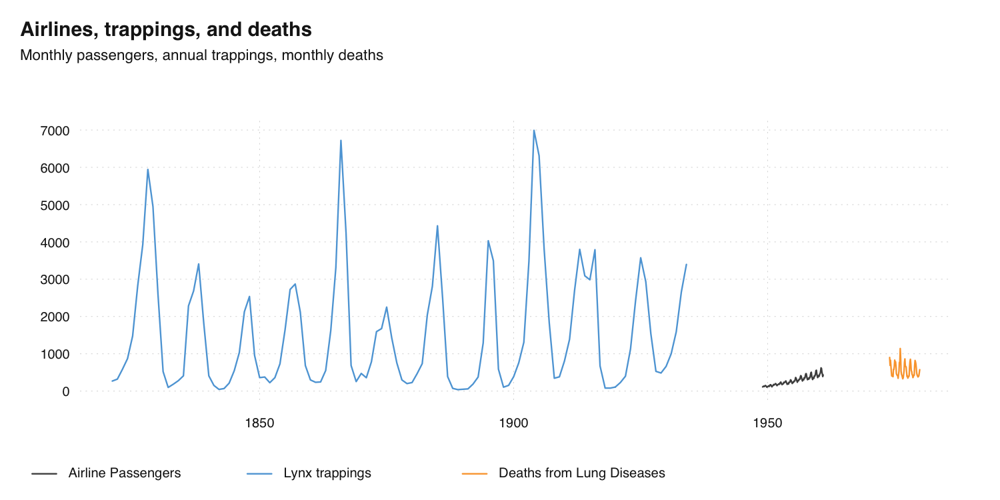

Introduction to tsbox
Class-Agnostic Time Series
Christoph Sax
Source:vignettes/tsbox.Rmd
tsbox.RmdThe R ecosystem knows a vast number of time series standards. Instead of creating the ultimate 15th time series class, tsbox provides a set of tools that are agnostic towards the existing standards. The tools also allow you to handle time series as plain data frames, thus making it easy to deal with time series in a dplyr or data.table workflow.
tsbox is built around a set of converters, which convert time series
stored as ts, xts, zoo,
zooreg, data.frame, data.table,
tbl, tbl_ts, tbl_time,
tis, irts or timeSeries to each
other. Because this works reliably, we can easily write functions that
work for all classes. So whether we want to smooth, scale,
differentiate, chain, forecast, regularize, or seasonally adjust a time
series, we can use the same commands to whatever time series class at
hand. And, most conveniently, we get a time series plot function that
works for all classes and frequencies.
To install the stable version from CRAN:
install.packages("tsbox")To install the development version:
# install.packages("remotes")
remotes::install_github("ropensci/tsbox")Convert everything to everything
tsbox can convert time series stored as ts,
xts, zoo, zooreg,
data.frame, data.table, tbl,
tbl_ts, tbl_time, tis,
irts or timeSeries to each other:
library(tsbox)
x.ts <- ts_c(fdeaths, mdeaths)
x.xts <- ts_xts(x.ts)
x.df <- ts_df(x.xts)
x.dt <- ts_dt(x.df)
x.tbl <- ts_tbl(x.dt)
x.zoo <- ts_zoo(x.tbl)
x.tsibble <- ts_tsibble(x.zoo)
x.tibbletime <- ts_tibbletime(x.tsibble)
x.timeSeries <- ts_timeSeries(x.tibbletime)
all.equal(ts_ts(x.timeSeries), x.ts) # TRUEUse the same functions for all time series classes
tsbox provides a basic toolkit for handling time series. These
functions start with ts_, so you use them with
auto-complete (press Tab). These functions work with any
ts-boxable time series, ts, xts, data.frame, data.table tibble,
zoo, tsibble or timeSeries and return the class of their
inputs.
For example, the ts_scale function performs
normalization - it subtracts the mean and divides by the
standard deviation of series. Like almost all ts- functions, it can be
used on any ts-boxable object, with single or multiple time series.
Because ts_scale normalizes time series, it is useful to
make different time series comparable. All of the following operations
perform the same task, but return the same object class as the
input:
There is a bunch of other transformation functions:
ts_trend, which estimates a trend; functions to calculate
differences, ts_pc, ts_pcy,
ts_diff, ts_diffy; a function to shift series,
ts_lag; functions to construct indices, both from levels
and percentage change rates: ts_index and
ts_compound. For a full list of functions, check out the
reference.
Combine multiple time series
A set of helper functions makes it easy to combine multiple time
series, even if their classes are different. The basic workhorse is
ts_c, which collects time series. Again, this works with
single or multiple series of any ts-boxable class:
If you want to choose a different name for single series, name the arguments:
Multiple series can also be combined into a single series:
ts_chain offers an alternative way to combine time
series, by chain-linking them. The following prolongs a short
time series with percentage change rates of a longer one:
To pick a subset of time series, and optionally rename, use
ts_pick:
Frequency conversion and alignment
There are functions to convert the frequency of time series and to regularize irregular time series. The following changes the frequency of two series to annual:
ts_frequency(ts_c(AirPassengers, austres), "year", sum)We already met ts_span, which can be used to limit the
time span of a series. ts_regular makes irregular time
series regular by turning implicit missing values into explicit
NAs.
And plot just about everything
Of course, this works for plotting, too. The basic function is
ts_plot, which can be used with any ts-boxable time series,
single or multiple, of any frequency:
If you want to use different names than the object names, just name the arguments (and optionally set a title):
ts_plot(
`Airline Passengers` = AirPassengers,
`Lynx trappings` = ts_df(lynx),
`Deaths from Lung Diseases` = ts_xts(fdeaths),
title = "Airlines, trappings, and deaths",
subtitle = "Monthly passengers, annual trappings, monthly deaths"
)
There is also a version that uses ggplot2 that uses
the same syntax. With theme_tsbox() and
scale_color_tsbox(), the output of ts_ggplot
is very similar to ts_plot.
Finally, ts_summary returns a data frame with frequently
used time series properties:
ts_summary(ts_c(mdeaths, austres, AirPassengers))Time series in data frames
Thanks to packages such as data.table and
dplyr, data frames have become the dominant data structure
in R, and storing time series in a data frame is the natural
consequence. And even if you don’t intend to keep your time series in
data frames, this is the format in which you import and export the
data.
In data frames, i.e., in a data.frame, a
data.table, or a tibble, tsbox stores one or
multiple time series in the ‘long’ format. tsbox detects a
value, a time and zero, one or several id
columns. Column detection is done in the following order:
Starting on the right, the first first
numericorintegercolumn is used as value column.Using the remaining columns and starting on the right again, the first
Date,POSIXct,numericorcharactercolumn is used as time column.characterstrings are parsed byanytime::anytime(). The timestamp,time, indicates the beginning of a period.All remaining columns are id columns. Each unique combination of id columns points to a time series.
Alternatively, the time column and the value column
to be explicitly named as time and
value. If explicit names are used, the column order will be
ignored. If columns are detected automatically, a message is
returned.
For example, the following data frame has the standard structure is understood by tsbox:
dta <-
dplyr::tribble(
~series_name, ~time, ~value,
"ser1", "2001-01-01", 1,
"ser1", "2002-01-01", 2,
"ser2", "2001-01-01", 10,
"ser2", "2002-01-01", 20,
)
ts_ts(dta)
# Time Series:
# Start = 2001
# End = 2002
# Frequency = 1
# ser1 ser2
# 2001 1 10
# 2002 2 20If time and value columns have different names than time
and value, it still works but returns a message:
library(dplyr)
dta %>%
dplyr::rename(
mytime = time,
myvalue = value
) %>%
ts_ts()
# [time]: 'mytime' [value]: 'myvalue'
# Time Series:
# Start = 2001
# End = 2002
# Frequency = 1
# ser1 ser2
# 2001 1 10
# 2002 2 20We can also use multiple id columns. When converted into a
ts object, multiple columns are combined into a single
value:
dta_multi_id <-
dplyr::tribble(
~series_name, ~series_attribute, ~time, ~value,
"ser1", "A", "2001-01-01", 1.5,
"ser1", "A", "2002-01-01", 2.5,
"ser2", "A", "2001-01-01", 10.5,
"ser2", "A", "2002-01-01", 20.5,
"ser1", "B", "2001-01-01", 1,
"ser1", "B", "2002-01-01", 2,
"ser2", "B", "2001-01-01", 10,
"ser2", "B", "2002-01-01", 20
)
ts_ts(dta_multi_id)
# Time Series:
# Start = 2001
# End = 2002
# Frequency = 1
# ser1_A ser2_A ser1_B ser2_B
# 2001 1.5 10.5 1 10
# 2002 2.5 20.5 2 20Data frames must be in a long format, with a single value columns only.
dta_wide <- ts_wide(ts_tbl(ts_c(mdeaths, fdeaths)))
# # A tibble: 72 × 3
# time mdeaths fdeaths
# <date> <dbl> <dbl>
# 1 1974-01-01 2134 901
# 2 1974-02-01 1863 689
# 3 1974-03-01 1877 827
# 4 1974-04-01 1877 677
# 5 1974-05-01 1492 522
# 6 1974-06-01 1249 406
# 7 1974-07-01 1280 441
# 8 1974-08-01 1131 393
# 9 1974-09-01 1209 387
# 10 1974-10-01 1492 582
# # … with 62 more rowstsbox tries to detect wide structures and warns if they occur:
ts_ts(dta_wide)
# Using numeric [id] columns: 'mdeaths'.
# Are you using a wide data frame? To convert, use 'ts_long()'.
# Convert columns to character or factor to silence this message.If data frames are in a wide format, ts_long() can be
used for conversion.
ts_long(dta_wide)Using tsbox in a dplyr / pipe workflow
tsbox works well with tibbles and with the pipe (|>
or %>%), so it can be nicely integrated into a dplyr
workflow:
Related packages
The tsibble package provides infrastructure for ‘tidy’ temporal data, and offers some converters between time series classes.
The timetk package offers converters and tools for data visualization and wrangling of time series data.
zoo and xts provide converters between some time series classes.